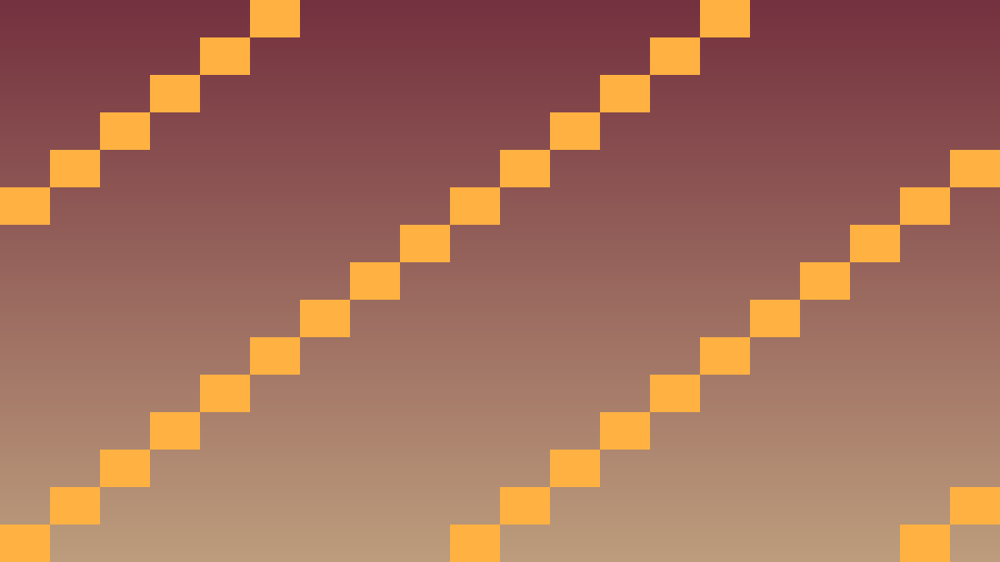
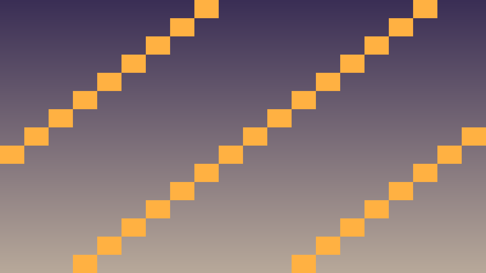
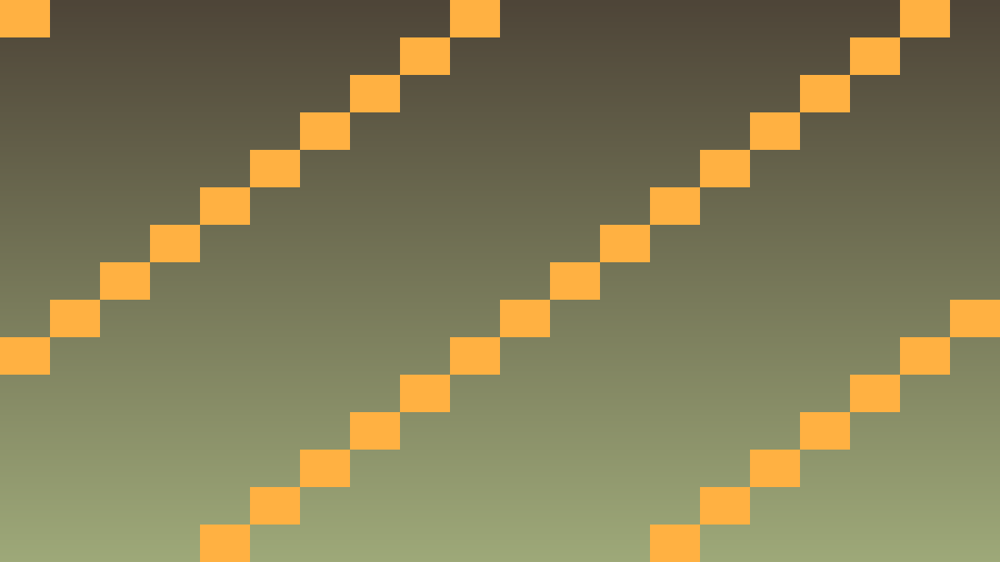

6.6 Noslēguma projekts: Puzzle spēle
Tavs šīs stundas izaicinājums: Izveidot un publicēt pilnvērtīgu puzzle spēli ar visu apgūto.
Pirms sāc: izmanto iepriekš apgūto un šīs lapas teorijas/koda piemērus. Ja vajadzīga jauna komanda vai rīks, vispirms atrodi tās paraugu teorijas sadaļā.
Teorija: Spēles apraksts
Puzzle spēle : spēlētājs risina sēriju problēmu, kā Sokoban, Tetris vai krāsu match-3.
Izvēlies vienu no opcijām (vai izveido savu):
Sokoban — bīdi kastes uz mērķa vietām.Match-3 — savieno 3+ vienādas krāsas.Tetris klons — krītošie bloki.Sliding puzzle — 4×4 attēla mozaīka.
Prasības:
Sākuma menu, settings, augstākie rezultāti.
Vismaz 10 līmeņi (Sokoban) vai endless mode (Match-3, Tetris).
Audio: mūzika + 5+ SFX.
Animācijas/Tween efekti.
Save sistēma (highscore + progress).
Eksportēta uz Web un publicēta GitHub Pages.
Kā šo izmantot projektā
Atceries: šajā stundā nepietiek tikai panākt redzamu efektu editorā. Paskaidro, kura C++ klase glabā stāvokli, kura metode to maina un kā Godot node struktūra šo kodu izmanto.
Pārbaudi: UI signāli, audio darbības, debug izvade un publicēšanas sagatave ir sasaistīta ar C++ spēles stāvokli.
#include <godot_cpp/variant/string.hpp>
using namespace godot;
struct PolishCheckpoint {
String lesson = "6.6 Noslēguma projekts: Puzzle spēle";
bool uses_cpp = true;
bool connects_ui_signals = true;
bool routes_audio_events = true;
bool verifies_export_build = true;
};
Praktiskie uzdevumi
1. uzdevums — Iesildies ar gatavu piemēru
Šis ir īss iesildīšanās uzdevums. Nokopē sagatavi, ielīmē to pareizajā koda vietā un palaid. Šeit pietiek droši izmēģināt tēmu 6.6 Noslēguma projekts: Puzzle spēle ; detalizētu izpratni veidosi nākamajos uzdevumos.
Kopējamais piemērs vai sagatave: izmanto šo bloku kā starta punktu, nevis kā gala risinājumu.
#include <godot_cpp/variant/string.hpp>
using namespace godot;
struct PolishCheckpoint {
String lesson = "6.6 Noslēguma projekts: Puzzle spēle";
bool uses_cpp = true;
bool connects_ui_signals = true;
bool routes_audio_events = true;
bool verifies_export_build = true;
};
Atver darba failu vai rīku. C++ fragmentu ievieto atbilstošajā .cpp vai .hpp failā pie šīs stundas klases.Nokopē visu piemēra bloku no šī uzdevuma un ielīmē to norādītajā vietā.Palaid kodu tieši tādu, kāds tas ir, un pārliecinies, ka parādās rezultāts, izvade vai vismaz nav kļūdas paziņojuma.Atrodi vienu drošu vietu, ko drīkst mainīt: tekstu, skaitli, krāsu, mainīgā vērtību vai testa ierakstu.Maini tikai šo vienu vērtību un palaid kodu vēlreiz.Salīdzini rezultātu pirms un pēc izmaiņas. Ja parādās kļūda, atcel pēdējo izmaiņu un palaid vēlreiz.Turpini pie 2. uzdevuma tikai tad, kad šis mazais piemērs darbojas.
2. uzdevums — Ievieto algoritmu spēles projektā
Pievieno šīs stundas paņēmienu kā nelielu, strādājošu spēles mehānikas daļu.
Izvēlies vienu projekta vietu: spēlētāju, pretinieku, kameru, UI, datu glabāšanu, sadursmi vai līmeņa ģenerēšanu.Nosauc klases, metodes un mainīgos pēc to lomas, piemēram, PlayerState, velocity, score vai update_ui().Uzraksti metodi, kas nolasa stāvokli, veic vienu skaidru darbību un atgriež vai parāda rezultātu.Izsauc šo metodi no piemērotas vietas: _ready(), _process(), _physics_process(), signāla apstrādātāja vai projekta palīgklases.Pievieno vienu īsu komentāru pie sarežģītākās loģikas vietas.Pārkompilē projektu un pārbaudi, ka editorā nav kļūdu.Salabo pirmo atrasto kļūdu pirms pievieno nākamo mehānikas daļu.Veic Git commit ar īsu tehnisku ziņu par pievienoto C++ funkcionalitāti.
3. uzdevums — Testē mehāniku un izdari secinājumu
Pārbaudi, vai C++ algoritms darbojas paredzami spēles vidē.
Izveido trīs testa scenārijus: parastu darbību, robežgadījumu un kļūdainu vai neērtu spēlētāja darbību.Palaid parasto scenāriju un pārbaudi rezultātu spēles logā vai Godot konsolē.Palaid robežgadījumu ar mazāko, lielāko, tukšo vai nulles vērtību, ko mehānika pieļauj.Palaid kļūdaino scenāriju un pārbaudi, vai projekts neavarē.Izlabo vienu konkrētu problēmu C++ kodā, node sasaistē vai datu inicializācijā.Pārkompilē un pārbaudi labojumu vēlreiz ar visiem trim scenārijiem.Beigās pieraksti vienu secinājumu: kura metode, klase vai algoritma solis vislabāk palīdzēja saprast tēmu 6.6 Noslēguma projekts: Puzzle spēle .
Papildu uzdevums — Pievieno mazu mehāniku
Ja pamatdarbs ir pabeigts, paplašini spēli ar vienu nelielu C++ uzlabojumu.
Izvēlies vienu mazu papildinājumu, kas izmanto to pašu šīs stundas paņēmienu.Pievieno vienu jaunu atribūtu, metodi, signāla apstrādi, datu elementu vai UI atjauninājumu.Savieno papildinājumu ar esošo scēnu vai klasi, nevis atstāj to atsevišķā demonstrācijā.Pārkompilē un pārliecinies, ka pamatmehānika joprojām darbojas.Saglabā izmaiņas ar Git commit tikai pēc veiksmīgas pārbaudes.
Biežākās kļūdas
Web build slow: Optimize assets, mazāk particles, lower texture resolution.Save fails neielādējas web vidē: Web localStorage atšķirās — pārbaudi, ka use_localstorage iestatīts.Mobile controls don't work: Pievieno touch input handlers.
Godot ekrānuzņēmumi

Match-3 puzzle game spēles aina: 8×8 grid ar krāsainām figūrām, score 1240, time 1:30, current chain bonus.

Pārlūks ar publicēto spēli URL bar 'https://username.github.io/puzzle-game', spēle ielādēta pilnekrāna.

GitHub repository Releases lapa ar v1.0.0 release, attached binaries (Windows, Linux, Web), changelog notes.
Koda piemērs (paplašināts)
// Match-3 spēles core
class Match3Board : public Node2D {
GDCLASS(Match3Board, Node2D)
private:
static const int W = 8, H = 8;
int grid[W][H];
public:
void initialize() {
for (int x = 0; x < W; x++)
for (int y = 0; y < H; y++)
grid[x][y] = std::rand() % 5; // 5 colors
}
std::vector<Vector2i> find_matches() {
std::vector<Vector2i> matches;
for (int x = 0; x < W; x++) {
for (int y = 0; y < H - 2; y++) {
if (grid[x][y] == grid[x][y+1] && grid[x][y+1] == grid[x][y+2]) {
matches.push_back({x, y});
matches.push_back({x, y+1});
matches.push_back({x, y+2});
}
}
}
// similarly for horizontal
return matches;
}
void clear_and_drop(const std::vector<Vector2i>& matches) {
// mark cleared, gravity, refill
}
};Pilnvērtīga match-3 spēle ar score, time, audio, tween animations, publicēta web vidē kā GitHub Pages.